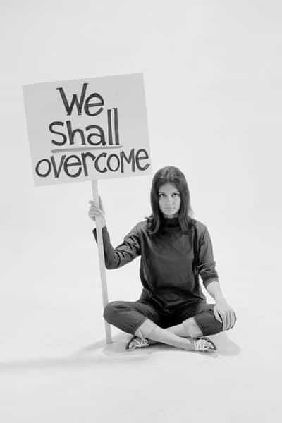

Edgar Tru is a Southern-based objectivist, natural-minded contrarian, and eleutheromania. Follow me on Gab.


I recall watching the film Megiddo: Omega Code 2 as a child. In part, it messed with me mentally. But, as I’ve grown, and in keeping with intellectual company, I find much wisdom in Christianity. Same for Islam, in fact. Same for the old-school cats of LeVeyan Satanism all the way to Might Is Right. Nature. She is real, She is alive, She is watching.
Getting back to Christianity, I remember being told about ‘lukewarm’ Christians and how they’d be judged, perhaps far harsher, than an atheist or non-believer. I recall rhetoric which espoused that there’d be an anti-Christ which would come (most likely from Rome) upon Mother Earth and many would fall before their deceit.
Well, I came to this observation back in either 2011 or 2012 when working on some literary material. And it rings a tune I can dance to.
Pastor Joel Osteen is a rat bastard, in my humble view. Men like him espouse that God is basically all love. That’s simply a lie. I was told, in my youth, that there’d be an anti-Christ which grown men would weep before in total belief. That even the strongest of men would follow them blindly in the potential millions, if not billions.
Pastors like Joel Osteen fit very well the anti-Christ I was warned about. Many other famous TV-based, money-grubbing whore pastors fit the anti-Christ description I was given as well. And many of these pastors, both the TV-based ones and those operating liberal-drenched churches, are very aligned with many leftist values and many still take this let’s-all-just-hug-and-love mentality when, in reality, we know that is a limp-wristed, weakening mentality which, in the end, causes a society to become too soft, too accepting, too loving. Are you yet connecting the dots?
Yes, Miley Cyrus (just to pick one out of the many celebrity higher-up bourgeois brats) is an anti-Christ. Women like her perpetuate much of the mindless whoredom, party-all-night lifestyle and mentality of the contemporary American youth. And I damn well understand the desire to simply cut loose, get piss-drunk and hit the dance floor while grinding on a fine-looking Latina’s ass. It’s natural, it’s normal, it’s human. But these have political and cultural snowball effects and societal comeuppances; especially when perpetuated and glorified by Hollywood, music and literature.
Ben Shapiro and his book Primetime Propaganda lay out very nicely, from the 1960s to our contemporary America, how Hollywood became more and more liberal. And reviewing that process goes to show that every decision truly leads to furthering that decisions extension far beyond its borders. It starts with just hearing a toilet flush on TV for the first time, or allowing two gay men to kiss for the first time. It’s quite remarkable to ponder over, I find.
Do not give that mouse a cookie.

Ever hear of Gloria Steinem? She is an American feminist and political activist who began her operations of advocating for feminism in the 1960-1970s. She’s an old rag now but still going strong with her feminist agenda and propaganda. She was a co-founder of New York Magazine and Ms. Magazine, to which she seems to remain a consulting editor.
She pioneers female-empowerment in culture and politics. She’s apparently often dubbed the “Mother of Feminism.” She also has some very interesting quotes:
“A woman without a man is like a fish without a bicycle.”
“A liberated woman is one who has sex before marriage and a job after.”
“Don’t think about making women fit in the world – think about making the world fit women.”
“Women have two choices: either she’s a feminist or a masochist.”
“We are talking about a society in which there will be no roles other than those chosen or those earned. We are really talking about humanism.”
“We’ve begun to raise our daughters like sons. . .but few have the courage to raise our sons more like our daughters.”
“We can tell our values by looking at our checkbook stubs.”
“The authority of any institution must stop at it’s citizens skin.”
“Clearly no one knows what leadership has gone undiscovered in women of all races, and in black and other minority men.”
“The surest way to be alone is to get married.”
“Law and justice are not always the same. When they aren’t, destroying the law may be the first step toward changing it.”
“On my 70th birthday I was going to get a tramp stamp.”
What fascinating propaganda. Her rhetoric, truly so, is an absolute art of manipulation and holds very strong anti-natural sentiments. I must give the old bag credit. The adversary is quite cunning. And this propaganda has surely infested our universities in ways which have already been keenly observed.
The feminist is a suicidal fanatic and danger unto herself. For man has not raised a strong hand to save her from her own destruction; thus, man condemns both his sons and daughters to hell.
Personally, if I was to engage in chat with any feminist, it’d be Emma Watson. Mostly because of her looks, but I do appreciate her calm, overall collective demeanor. However, she also believes that men and women can be equal in every aspect of life.
On paper, it looks fine and sounds reasonable. Why hold down another group and cause tension and conflict when we can all be friends and watch rainbows form together? Because Nature doesn’t give a shit about emotion. She is all about law and order, dominance and submission. The female is only allowed to rule over man because men allow it. The female alone is powerless and must have men do their bidding for them. Period.
Why do I show respect toward the female cop? Because, if I get out of line, a bunch of male cops are going to kick my ass. The female cop alone is useless in serious situations. Equality is perhaps the worse myth perpetuated by the West.
If misogyny is able to rise up in the West, it is perhaps possible to regain control of this ever-crumbling empire. If not, another dominant culture and group shall have to swoop in and be the next saviors. And, in time, they may make the same damn mistakes as the post-Western man, and on the cycle continues.

An intriguing cat, named Boyd Rice, once espoused:
“I think Armageddon came a long time ago. The end of the world came ages ago, but it happened slowly over a period of time and nobody noticed it. It’s an on-going process. The world today is different than the world thirty years ago. It’s like decayed so much, and it’s decaying more and more all the time. And as that decay gets worse, we get stronger. And we are rising up as the entire world is sinking down, until our world is rotten and corrupt and they’re ordaining their own death. To us, they’re just dead people who refuse to lie down.”
Look around you. The world is in a pot of piss and the West, especially America, is ruining herself. We now have judges who take away a teenager from their parents because they refused to adhere to their brats desire to take hormone-stoppers to transition into the opposite sex. The US army (or global tyrants) is being weakened by allowing females to actually serve on the frontlines of war. People, in everyday public conversation, have to whisper far too much between sentences because someone might over hear, get offended, and enact violence. Homosexual marriage was forced through, which then created a political and cultural snowball effect of far worse degeneracy, as I see it. This is only a minority of conundrums slowly but surely plaguing the West like a virus.
The anti-Christ is anti-Nature.
Conservatism will have to be forced upon the West by means of government. That is my belief. Logically speaking, I cannot foresee any other way. Perhaps a way will appear and we’ll finally get that utopia so many progressive liberals aspire to. Of course, you’ll have to completely adopt all their views of morality in order to achieve it while completely rejecting your own.
I think America is done for. When I look at Old Glory, I no longer see what she once was. No, I see an imposter. And I know, as she flies high in the wind, she looks down laughing at us in the grimmest, most sinister of ways.
Read Next: The Myth That Jesus Christ Was Not Masculine